Previously we used an unadjusted visit_med75. Simply taking the median of all maximum patient visits at a site and multiplying by 0.75. If the number of patients at a site is reasonably large the smallest maximum visit of the patients making the cut-off will be close or equal to the cut-off point.
set.seed(1)
df_visit <- sim_test_data_study(
n_pat = 120,
n_sites = 6,
frac_site_with_ur = 0.4,
ur_rate = 0.6)
df_visit$study_id <- "A"
df_site <- site_aggr(df_visit, method = "med75_adj")
plot_visit_med75(df_visit, df_site, study_id_str = "A", n_site = 6)## purple line: mean site ae of patients with visit_med75
## grey line: patient included
## black dashed line: patient excluded
## dotted vertical line: visit_med75, 0.75 x median of maximum patient visits of site
## solid vertical line: visit_med75 adjusted, increased to minimum maximum patient visit of included patients
## dashed vertical line: maximum value for visit_med75 adjusted, 80% quantile of maximum patient visits of studyIf we only have a few patients per site chances will be greater that the smallest maximum visit of those patients that make the cut-off is much greater than the cut-off point and we could thus include more visits into our analysis. For those cases we adjust the evaluation point to the smallest maximum visit of all patients that make the initial cut.
set.seed(1)
df_visit <- sim_test_data_study(
n_pat = 24,
n_sites = 6,
frac_site_with_ur = 0.4,
ur_rate = 0.6)
df_visit$study_id <- "A"
df_site <- site_aggr(df_visit, method = "med75_adj")
plot_visit_med75(df_visit, df_site, study_id_str = "A", n_site = 6)## purple line: mean site ae of patients with visit_med75
## grey line: patient included
## black dashed line: patient excluded
## dotted vertical line: visit_med75, 0.75 x median of maximum patient visits of site
## solid vertical line: visit_med75 adjusted, increased to minimum maximum patient visit of included patients
## dashed vertical line: maximum value for visit_med75 adjusted, 80% quantile of maximum patient visits of study
It can happen that we have a site that has early starting patients. To avoid an evaluation point for which we will only have a limited patient pool we set a maximum limit for the evaluation point that includes at least 20% of all patients in the study, by taking the 80% quantile of all maximum patient visits at a study.
set.seed(1)
# early starting site
df_visit1 <- sim_test_data_study(
n_pat = 3,
n_sites = 1,
max_visit_sd = 2,
max_visit_mean = 40
)
# late starting sites
df_visit2 <- sim_test_data_study(
n_pat = 25,
n_sites = 5,
max_visit_sd = 2,
max_visit_mean = 10
)
df_visit1$site_number <- paste0("A", df_visit1$site_number)
df_visit2$site_number <- paste0("B", df_visit2$site_number)
df_visit1$patnum <- paste0("A", df_visit1$patnum)
df_visit2$patnum <- paste0("B", df_visit2$patnum)
df_visit <- bind_rows(df_visit1, df_visit2)
df_visit$study_id <- "A"
df_site <- site_aggr(df_visit)
plot_visit_med75(df_visit, df_site, study_id_str = "A", n_site = 6)## purple line: mean site ae of patients with visit_med75
## grey line: patient included
## black dashed line: patient excluded
## dotted vertical line: visit_med75, 0.75 x median of maximum patient visits of site
## solid vertical line: visit_med75 adjusted, increased to minimum maximum patient visit of included patients
## dashed vertical line: maximum value for visit_med75 adjusted, 80% quantile of maximum patient visits of study